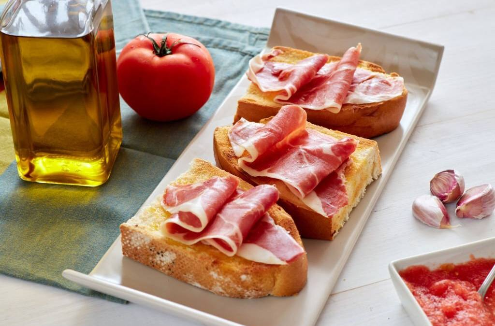
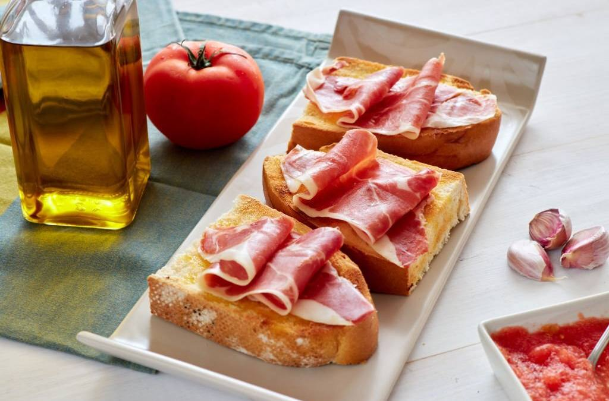

Le Petit Moka
Tu rincón de café en Denia
Tu rincón de café en Denia
En el corazón del Paseo de Saladar, Denia, nació un rincón pensado para los amantes del buen café y los momentos compartidos. Le Petit Moka no es solo una cafetería: es un espacio donde cada detalle cuenta, desde el aroma del café recién molido hasta la calidez de sus mesas que invitan a quedarse un poco más.
La idea surgió de un sueño sencillo: crear un lugar donde la tradición del café se mezclara con la modernidad de los sabores y la estética. Inspirados por los paseos bajo el sol mediterráneo y la brisa del mar, sus fundadores imaginaron un sitio que transmitiera cercanía, frescura y creatividad.
En Le Petit Moka, los gofres crujientes, los batidos llamativos y las tartas icónicas como el Red Velvet se convierten en protagonistas de historias cotidianas: desayunos que empiezan con energía, tardes de charla entre amigos, celebraciones improvisadas que terminan con una sonrisa y un dulce en la mano.
Más que un café, Le Petit Moka es un punto de encuentro. Aquí, los clientes no solo disfrutan de productos, sino que se convierten en parte de una comunidad que celebra la vida con pequeños placeres. Cada visita es distinta, pero todas comparten un mismo hilo conductor: la pasión por ofrecer experiencias memorables.
Hoy, en el Paseo de Saladar, Le Petit Moka sigue creciendo con la misma esencia que lo vio nacer: un lugar moderno, acogedor y lleno de sabor, donde cada taza de café cuenta una historia y cada cliente forma parte de ella.

 

“El mejor café de Denia, ambiente acogedor y trato excelente.” – Marta
“Las tartas son espectaculares, siempre vuelvo.” – Juan
“El mejor café de Denia, ambiente acogedor y trato excelente.” – Marta
“Las tartas son espectaculares, siempre vuelvo.” – Juan
“El mejor café de Denia, ambiente acogedor y trato excelente.” – Marta